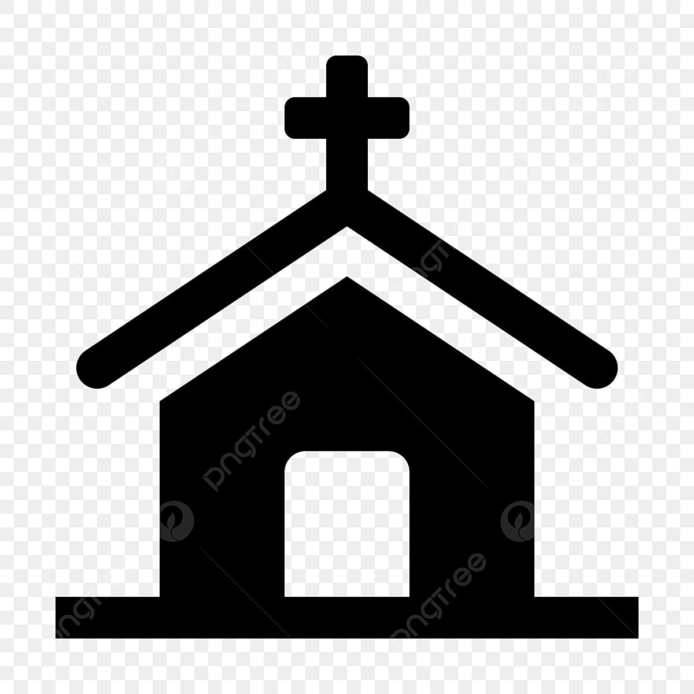

<!DOCTYPE html>
<html>
  <head>
    <title>Lokasi Gereja Katolik di DIY</title>

    <link rel="stylesheet" href="https://unpkg.com/leaflet@1.9.4/dist/leaflet.css" integrity="sha256-p4NxAoJBhIIN+hmNHrzRCf9tD/miZyoHS5obTRR9BMY=" crossorigin="" />
    <script src="https://unpkg.com/leaflet@1.9.4/dist/leaflet.js" integrity="sha256-20nQCchB9co0qIjJZRGuk2/Z9VM+kNiyxNV1lvTlZBo=" crossorigin=""></script>

    <link href="https://cdn.jsdelivr.net/npm/bootstrap@5.3.1/dist/css/bootstrap.min.css" rel="stylesheet" />

    <nav class="navbar navbar-expand-lg navbar-dark shadow-sm fixed-top" style="background-color: #0edf5e">
      <div class="container">
        <a class="navbar-brand" href="#">
          
        </a>
        <a class="navbar-brand" href="#">Peta Lokasi Gereja Katolik di DIY</a>
        <button class="navbar-toggler" type="button" data-bs-toggle="collapse" data-bs-target="#navbarNavDropdown" aria-controls="navbarNavDropdown" aria-expanded="false" aria-label="Toggle navigation">
          <span class="navbar-toggler-icon"></span>
        </button>
        <div class="collapse navbar-collapse" id="navbarNavDropdown">
          <ul class="navbar-nav ms-auto"></ul>
        </div>
      </div>
    </nav>

    <style>
      html, body {
        height: 100%;
        margin: 0;
        background-color: rgb(39, 213, 73);
      }
      #map {
        width: 100%;
        height: 600px;
        margin-top: 60px;
      }
    </style>
  </head>

  <body>
    <div id="map"></div>

    <script>
      var bgnIcon = L.icon({
        iconUrl: "ikon.jpg",
        iconSize: [50, 50],
        iconAnchor: [25, 50],
        popupAnchor: [0, -50],
      });

      function createMarker(lat, lon, imgSrc, title) {
        return L.marker([lat, lon], { icon: bgnIcon }).bindPopup(
          `<div style="text-align: center;">
            
            <h3>${title}</h3>
          </div>`
        );
      }

      var a = createMarker(-7.788615683471208, 110.39025455869842, "Gereja DIY/Gereja Katolik Kristus Raja, Baciro.jpg", "Gereja Baciro");
      var b = createMarker(-7.769056284520254, 110.46561390283793, "Gereja DIY/Gereja Katolik Maria Marganingsih, Kalasan.jpg", "Gereja Maria Marganingsih");
      var c = createMarker(-7.752435228145359, 110.36794045879216, "Gereja DIY/St.Alphonsus De Liguori Catholic Church.jpg", "Gereja St. Alphonsus De Liguori");
      var d = createMarker(-7.7709991989906975, 110.41070675056444, "Gereja DIY/St. Asumpta Maria Babarsari.jpg", "Gereja Asumpta Maria Babarsari");
      var e = createMarker(-7.788785761028333, 110.35987049584682, "Gereja DIY/mmaculate Heart of Virgin Mary Catholic Church, Kumetiran.jpg", "Gereja Immaculte");

      var bgn = L.layerGroup([a, b, c, d, e]);

      var osm = L.tileLayer("https://tile.openstreetmap.org/{z}/{x}/{y}.png", {
        maxZoom: 20,
        attribution: "© OpenStreetMap",
      });

      var osm2 = L.tileLayer("https://mt0.google.com/vt/lyrs=s&x={x}&y={y}&z={z}", {
        maxZoom: 20,
        attribution: '&copy; <a href="http://osm.org/copyright">OpenStreetMap</a> contributors',
      });

      var map = L.map("map", {
        center: [-7.794074, 110.398421],
        zoom: 14,
        layers: [osm, bgn],
      });

      var baseMaps = {
        "OpenStreetMap": osm,
        "Google Maps": osm2,
      };

      var overlayMaps = {
        "Gereja": bgn,
      };

      L.control.layers(baseMaps, overlayMaps).addTo(map);
    </script>
  </body>
</html>
